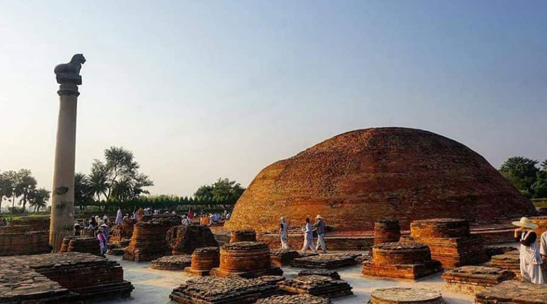
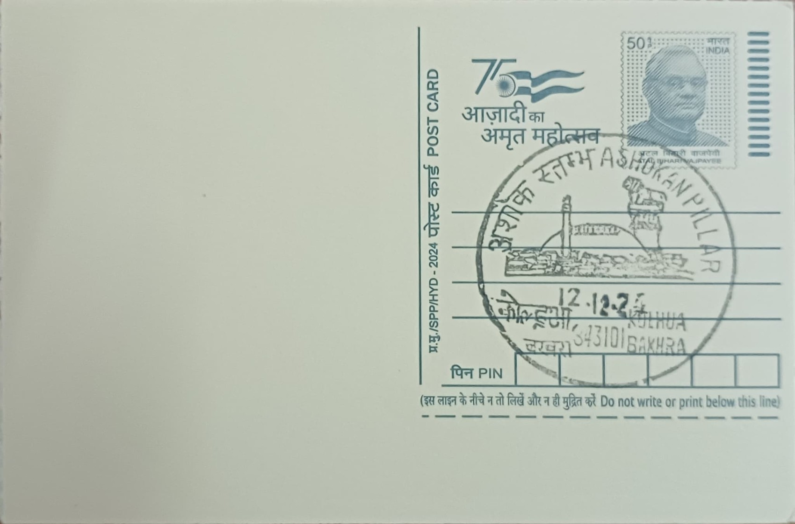

The site at Kolhua, near Bakhra in Vaishali district, bears a monolithic sandstone column that local tradition simply calls the "Lat," a name derived from the Hindustani word for pillar. Vaishali itself takes its name, by tradition, from King Vishal of the Mahabharata era, though its historical importance rests less on legend than on its documented role as the capital of the Licchavi clan centuries before Ashoka's time. The pillar came to mark, for later Buddhist pilgrims and for the Mauryan state alike, a place already thick with memory: the site where the Buddha was said to have announced his approaching death and taken his final leave of the city before departing toward Kushinagar.
Vaishali's claim to significance is twofold, and the pillar sits at the intersection of both strands. Politically, the city served as the capital of the Vajjika League, a confederacy of clans under Licchavi leadership that many historians treat as one of the earliest ganasangha, or republican, polities anywhere in the ancient world, governing through assemblies rather than a single hereditary ruler. Religiously, it was the location of the Second Buddhist Council, convened roughly a century after the Buddha's death, traditionally under the patronage of King Kalasoka, to resolve disputes among the Vaishali monks over relaxed rules of monastic discipline. The pillar at Kolhua stands as the physical marker tying this layered history together, planted by Ashoka at a site he clearly regarded as already sacred.
The column itself is a single piece of finely polished sandstone roughly eleven metres in height, rising from a circular shaft to a bell-shaped lotus capital in the Mauryan style, topped by a seated lion figure facing north. Unlike most other Ashokan pillars, the Vaishali shaft carries no inscribed edict, which has led some scholars to count it among the earlier pillars raised in Ashoka's reign, before the practice of inscribing moral proclamations became standardised across the empire. The lion itself is comparatively restrained and less sculpturally elaborate than the capital at Lauriya-Nandangarh, a stylistic difference that specialists have used to help place it within the broader sequence of Ashoka's pillar-building programme.
The pillar is only one element of a larger excavated complex at Kolhua that the Archaeological Survey of India has uncovered in stages, including seasons of excavation in 1989-90, 1992-93, and 2010-11. These digs exposed a brick stupa, a swastika-shaped monastery identified as a kutagarshala, a water tank traditionally associated with the site's sacred pool, and a cluster of votive stupas dating to the later Shunga and Kushana periods, showing that the location remained a site of active Buddhist devotion for several centuries after Ashoka's time. The seventh-century Chinese pilgrim Xuanzang recorded seeing the pillar during his travels through the region and attributed it directly to "Ashoka-raja," corroborating its Mauryan origin independently of later Indian tradition.
Among the finds recovered from the surrounding stupa mound was a relic casket, which was eventually transferred to the Patna Museum in 1972 and remains part of its collection today. The pillar and its associated ruins now fall under the protection of the Archaeological Survey of India, which maintains the enclosed site as a notified monument alongside the nearby Vaishali museum and the modern Buddhist memorial park built to commemorate the Buddha's final sermon. As one of only two Ashokan pillars still standing in their original find-spot, the Kolhua column draws both archaeological researchers tracing early Mauryan epigraphic practice and Buddhist pilgrims retracing the route of the Buddha's last journey.
| Date of Introduction | October 8, 2024 |
|---|---|
| Address | Sub Postmaster, |
| Bakhra SO, | |
| Muzaffarpur (dt.), Bihar - 843101. |